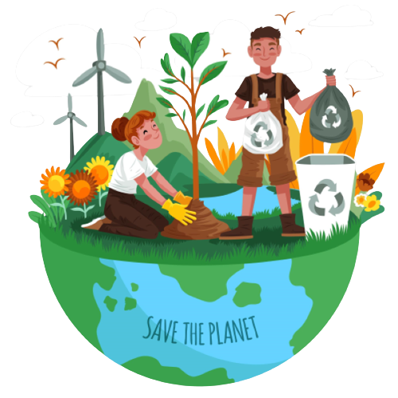
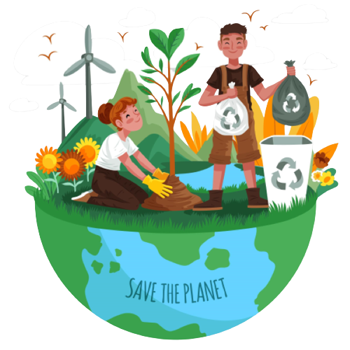

Menuju Indonesia Bebas Sampah
Tahukah Kamu ???
Data Sistem Informasi Pengelolaan Sampah Nasional (SIPSN) Kementerian Lingkungan Hidup dan Kehutanan (KLHK) tahun 2022 hasil input dari 202 kab/kota se Indonesia menyebut jumlah timbunan sampah nasional mencapai angka 21.1 juta ton. Dari total produksi sampah nasional tersebut, 65.71% (13.9 juta ton) dapat terkelola, sedangkan sisanya 34,29% (7,2 juta ton) belum terkelola dengan baik.
Berdasarkan jenisnya, mayoritas timbulan sampah nasional pada 2022 berupa sampah sisa makanan dengan proporsi 41,55%. Kemudian sampah plastik berada di urutan kedua dengan proporsi 18,55%.Sebanyak 13,27% sampah di Indonesia pada 2022 berupa kayu/ranting, 11,04% sampah kertas/karton, dan sampah logam 2,86%. Ada pula 2,54% sampah kain, sampah kaca 1,96%, sampah karet/kulit 1,68%, dan 6,55% sampah jenis lainnya.
Klik dibawah ini untuk melihat data pengelolaan sampah di Indonesia
Menuju Indonesia Bebas Sampah
Bagaimana Solusi Untuk Menangani Masalah Ini ???
Undang-Undang Nomor 18 Tahun 2008 tentang Pengelolaan Sampah, diperlukan pengurangan dan penanganan sampah khususnya untuk limbah dari rumah tangga. Pengurangan sampah yang dimaksud adalah pembatasan timbulan, pendauran ulang, dan pemanfaatan kembali sampah. Untuk penanganan sampah terdiri dari kegiatan pemilahan dan pemisahan sampah sesuai jenis, jumlah dan sifat, pengumpulan dan pemindahan sampah ke tempat penampungan atau pengolahan sampah, pengangkutan sampah, pengolahan sampah, serta pemrosesan akhir sampah dalam bentuk pengembalian sampah ke media lingkungan secara aman.
Pengelolaan sampah terpadu berbasis masyarakat selain berfungsi menjaga kelestarian lingkungan juga telah terbukti mampu mensejahtetakan masyarakat. Pengelolaan sampah secara terpadu tersebut diwujudkan dengan pengadaan program bank sampah. Program pengelolaan sampah tersebut terdapat pada berbagai program diantaranya komposting, daur ulang, kerja bakti, dan bank sampah. Bank sampah telah terbukti mampu meningkatkan peran masyarakat dalam mengelola sampah, menjaga kelestarian lingkungan, sekaligus meningkatkan taraf ekonomi melalui hasil pengolahan sampah. Kesimpulannya, pengelolaan sampah yang tepat untuk dapat diterapkan di Indonesia adalah pengelolaan sampah terpadu berbasis masyarakat. Pengelolaan sampah tersebut direncanakan, dijalankan, dikelola, dan dievaluasi oleh masyarakat, dengan dukungan dari pemerintah dan pihak terkait.
Bank sampah merupakan transit sampah sebelum nantinya sampah diolah berdasarkan jenisnya. Alur kerja bank sampah mirip seperti bank pada umumnya, namun yang membedakan adalah alat tukar yang digunakan. Pada bank sampah masyarakat menyetorkan sampah yang kemudian akan didata dan dicatat sebagai tabungan. Tabungan tersebut suatu saat dapat diambil berupa uang, sembako, pulsa listrik, atau air. Bank sampah menjadi program solutif pengelolaan sampah mandiri yang Kajian tentang Pengelolaan Sampah di Indonesia 7 terbukti mampu mengurangi volume sampah yang semakin bertambah (Anih S.S, 2014:82). Berdasarkan peneltian yang dilakukan oleh Rohmawati Dhina (2015:313), memperoleh hasil kesepakatan bahwa bank sampah merupakan alternatif solusi yang sukses mengurangi volume sampah. Kelestarian lingkungan dapat tercipta dan masyarakat mendapatkan keterampilan merupakan wujud kesuksesan bank sampah dalam sistem pengelolaan sampah (Firmansyah Adi dkk, 2016:190). Bank sampah memberikan manfaat lingkungan dari pelayanan masyarakat dalam pengelolaan sampah yang mampu mengubah pemikiran masyarakat terhadap sampah (Reba A.P dan Iif M.I, 2017:117).
 

CIRCULAR ECONOMY


Ekonomi sirkular adalah sebuah sistem atau model ekonomi yang bertujuan untuk menghasilkan pertumbuhan ekonomi dengan mempertahankan nilai produk, bahan, dan sumber daya dalam perekonomian selama mungkin, sehingga meminimalkan kerusakan sosial dan lingkungan yang disebabkan oleh pendekatan ekonomi linear (Ellen MacArthur, 2015).
Ekonomi sirkular merupakan model yang berupaya memperpanjang siklus hidup dari suatu produk, bahan baku, dan sumber daya yang ada agar dapat dipakai selama mungkin. Prinsip dari ekonomi sirkular mencakup pengurangan limbah dan polusi, menjaga produk dan material terpakai selama mungkin, dan meregenerasi sistem alam (Ellen Macarthur Foundation). Melalui ekonomi sirkular, kita bisa mencapai lebih banyak dengan menggunakan lebih sedikit.
Salah satu model ekonomi yang ditawarkan kepada dunia adalah model ekonomi sirkular, dimana dalam model ini barang yang sudah dikonsumsi dapat diolah kembali (Reduce, Reuse, Recycle, Replace, Repair). Sampah tersebut diproduksi ulang sehingga mengurangi dampak limbah buangan yang berbahaya bagi lingkungan dan dapat digunakan kembali sebagai produk baru atau sebagai bahan baku produk lain.
Salah satu implementasi dari ekonomi sirkular pada kalangan rumah tangga adalah program bank sampah. Masyarakat dapat berperan sebagai produsen dan kosumen dengan memproses dan mempergunakan sampah rumah tangganya masing-masing. Hasil pemilahan tersebut dapat dijual kepada pihak ke tiga atau digunakan untuk keperluan sehari-hari.
Pengelolaan limbah adalah salah satu bentuk implementasi ekonomi sirkular. Ellen MacArthur Foundation (2013:7), komunitas yang mempopulerkan ekonomi sirkular berpendapat bahwa inti dari ekonomi sirkular adalah; pertama, untuk mendesain limbah, produk-produk yang dikonsumsi dapat didaur ulang dan dijadikan sumber produksi kembali. Kedua, terpilahnya limbah jangka panjang dan jangka pendek. Ketiga, energi yang diperlukan pada sistem ini adalah energi hijau, sekaligus untuk mengurangi pemakaian sumber energi yang tidak dapat diperbaharui.